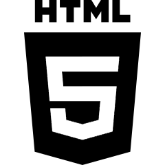

Entusiasta de la tecnología y el desarrollo del software, siempre aprendiendo y mejorando
Un gusto poder saludarlos y ponerme en contacto con ustedes. A continuación, les adjunto a detalle mis estudios, actualmente no poseo experiencia laboral. Soy una persona muy calma y tranquila, ideal para la atención al cliente o la resolución de problemas que se plantean al momento. Tengo experiencia previa con atención al cliente y ventas. Poseo un buen manejo de responsabilidad a la hora de ejercer, tengo conocimientos avanzados sobre tecnología en general y un excelente uso de computadoras y algún que otro programa, ya sea Word, Excel, entre otras, me adapto fácilmente a los entornos laborales nuevos y las herramientas utilizadas para comenzar a trabajar. Tengo conocimientos de programación en diferentes lenguajes y, además, actualmente me encuentro en el 2do año de la carrera de Lic. En Sistemas que se da en la Universidad Nacional de Lanús. He concluido mis estudios primarios y secundarios en el Instituto privado “Mi Casa”, o también conocido como “Nere-Echea”.Tecnologías que actualmente manejo
